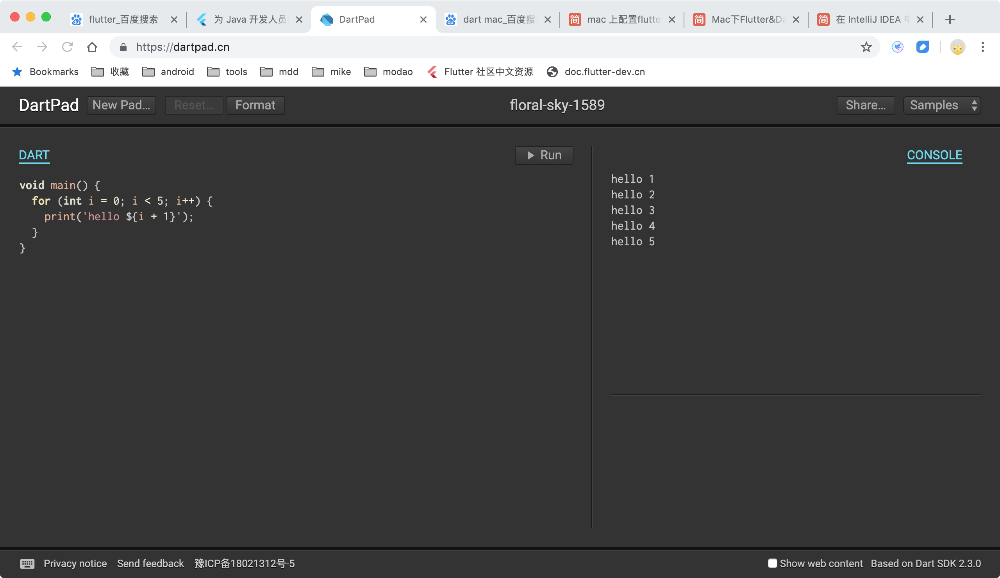
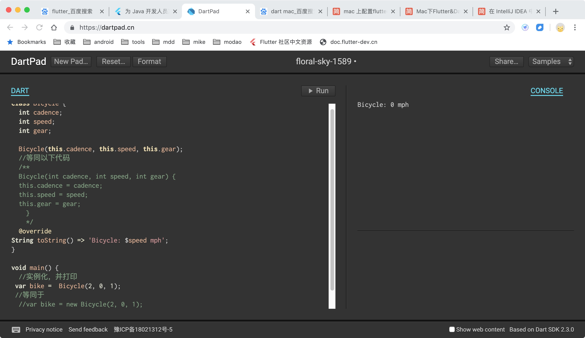
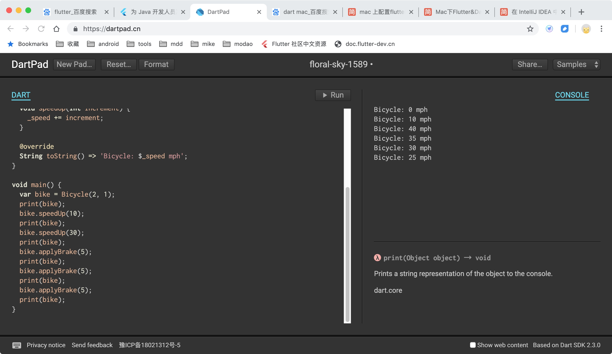
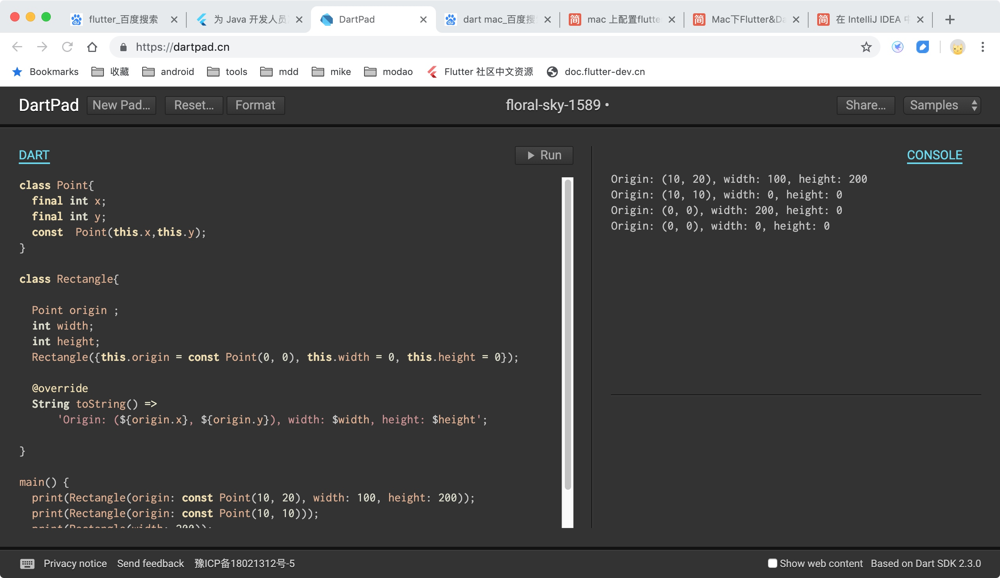
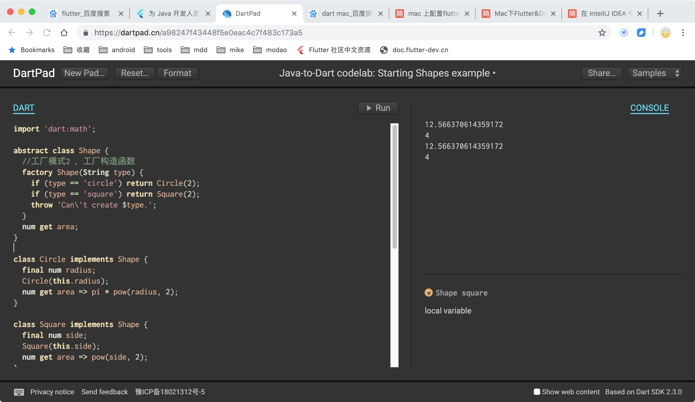

1.dartpad
https://dartpad.cn/

2.创建一个简单的 Dart 类
class Bicycle {
int cadence;
int speed;
int gear;
Bicycle(this.cadence, this.speed, this.gear);
//等同以下代码
/**
Bicycle(int cadence, int speed, int gear) {
this.cadence = cadence;
this.speed = speed;
this.gear = gear;
}
*/
//toString
@override
String toString() => 'Bicycle: $speed mph';
}
void main() {
//实例化，并打印
var bike = Bicycle(2, 0, 1);
//等同于
//var bike = new Bicycle(2, 0, 1);
print(bike);
}
RUN看结果：

实现变量私有，相当Java中的private
class Bicycle {
int cadence;
int _speed = 0;
int get speed => _speed;
int gear;
Bicycle(this.cadence, this.gear);
void applyBrake(int decrement) {
_speed -= decrement;
}
void speedUp(int increment) {
_speed += increment;
}
@override
String toString() => 'Bicycle: $_speed mph';
}
void main() {
var bike = Bicycle(2, 1);
print(bike);
bike.speedUp(10);
print(bike);
bike.speedUp(30);
print(bike);
bike.applyBrake(5);
print(bike);
bike.applyBrake(5);
print(bike);
bike.applyBrake(5);
print(bike);
}

3. 使用可选参数（而不是使用重载）
Java 代码中，使用了重载构造函数的方法，该方法在 Java 中很普遍，重载的构造函数和之前的构造函数具有相同的方法名，但是在方法的参数个数或者参数类型上有些许不同。Dart 并不支持构造函数的重载，而采用了另外一种方法来处理这种情况.
Rectangle({this.origin = const Point(0, 0), this.width = 0, this.height = 0});
这是一个矩形类的构造方法，但是其参数是可选的，因为：
1.它使用了花括号 {}；2.参数都有确定的默认值。
示例：
class Point {
final int x;
final int y;
const Point(this.x, this.y);
}
class Rectangle {
Point origin;
int width;
int height;
Rectangle({this.origin = const Point(0, 0), this.width = 0, this.height = 0});
@override
String toString() =>
'Origin: (${origin.x}, ${origin.y}), width: $width, height: $height';
}
main() {
print(Rectangle(origin: const Point(10, 20), width: 100, height: 200));
print(Rectangle(origin: const Point(10, 10)));
print(Rectangle(width: 200));
print(Rectangle());
}
}
main() {
print(Rectangle(origin: const Point(10, 20), width: 100, height: 200));
print(Rectangle(origin: const Point(10, 10)));
print(Rectangle(width: 200));
print(Rectangle());
}

4 工厂模式
4.1 导入math，abstarct抽象类实现
import 'dart:math';
abstract class Shape {
num get area;
}
class Circle implements Shape {
final num radius;
Circle(this.radius);
num get area => pi * pow(radius, 2);
}
class Square implements Shape {
final num side;
Square(this.side);
num get area => pow(side, 2);
}
main() {
final circle = Circle(2);
final square = Square(2);
print(circle.area);
print(square.area);
}
4.2 工厂模式
import 'dart:math';
abstract class Shape {
//工厂模式2 ，工厂构造函数
factory Shape(String type) {
if (type == 'circle') return Circle(2);
if (type == 'square') return Square(2);
throw 'Can\'t create $type.';
}
num get area;
}
class Circle implements Shape {
final num radius;
Circle(this.radius);
num get area => pi * pow(radius, 2);
}
class Square implements Shape {
final num side;
Square(this.side);
num get area => pow(side, 2);
}
//工厂模式1，工厂方法
Shape shapeFactory(String type) {
if (type == 'circle') return Circle(2);
if (type == 'square') return Square(2);
throw 'Can\'t create $type.';//抛出异常
}
main() {
//try/catch
try {
final circle = shapeFactory('circle');
final square = shapeFactory('square');
print(circle.area);
print(square.area);
final circle2 = Shape('circle');
final square2 = Shape('square');
print(circle2.area);
print(square2.area);
} catch (err) {
print(err);
}
}

5 接口的实现
Dart 语言并没有提供 interface 关键字，但是每一个类都隐式地定义了一个接口。即每一个类都是一个接口。
import 'dart:math';
abstract class Shape {
factory Shape(String type) {
if (type == 'circle') return Circle(2);
if (type == 'square') return Square(2);
throw 'Can\'t create $type.';
}
num get area;
}
//实现抽象类
class Circle implements Shape {
final num radius;
Circle(this.radius);
num get area => pi * pow(radius, 2);
}
class Square implements Shape {
final num side;
Square(this.side);
num get area => pow(side, 2);
}
//实现非抽象类
class CircleMock implements Circle {
num area;
num radius;
}
main() {
final circle = Shape('circle');
final square = Shape('square');
print(circle.area);
print(square.area);
}
6 函数式编程
非函数式示例：
String scream(int length) => "A${'a' * length}h!";
main() {
final values = [1, 2, 3, 5, 10, 50];
values.map(scream).forEach(print);
print("-------------");
Iterable list = values.map(scream);
list.forEach(print);
print("-------------");
values.skip(1).take(3).map(scream).forEach(print);
}